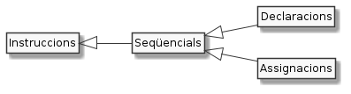

Declaracions i assignacions¶

Un petit joc¶
Fem un petit joc dels d’endevinar un nombre.
Segueix les instruccions:
pensa’t un nombre
multiplica el resultat` per 3
suma-li 6
divideix-ho entre 3
resta-li el número que et vas pensar
Deixa’m que endevini. Et queden, et queden… 2, oi que sí?
El joc en codi¶
Aquestes instruccions són molt repetitives i podrien perfectament ser codificades en Java.
Per exemple, fes una ullada al següent codi. Simplement llegeix-lo per sobre sense intentar entendre tots els detalls. És totalment raonable que no entenguis res. De seguida te’ls explicaré.
1 2 3 4 5 6 7 8 9 10 11 12 13 14 15 16 17 18 19 20 21 22 23 24 25 26 27 28 29 30 31 32 33 34 35 36 37 38 39 40 41 42 43 | /*
* Aquest programa mostra capacitats d'endevinació
*
* Per executar-ho, fes
* $ java EndevinaNombre 42
*/
public class EndevinaNombre {
public static void main(String[] args) {
int numeroPensat; // guardarà el número pensat
int numero; // guardarà els càlculs intermitjos
// pensa un número
numeroPensat = Integer.parseInt(args[0]);
System.out.print("El número pensat és ");
System.out.println(numeroPensat);
// Multiplica'l per 3
numero = numeroPensat * 3;
System.out.print("Quan el multipliques per 3 obtens ");
System.out.println(numero);
// Suma-li 6
numero = numero + 6;
System.out.print("Quan li sumes 6 arriba a ");
System.out.println(numero);
// divideix-ho tot per 3
numero = numero / 3;
System.out.print("Un cop dividit per 3 queda ");
System.out.println(numero);
// resta-li el número pensat
numero = numero - numeroPensat;
System.out.print("Finalment, en restar-li el valor inicial, queda ");
System.out.println(numero);
// compara el resultat
System.out.println("A que el resultat és 2?");
}
}
|
Executem el programa¶
Per començar, intentem fer-lo funcionar. Recordes com?
Primer havíem de compilar-lo. És a dir, generar el .class que
permetrà l’execució.
$ javac EndevinaNombre.java
Ara que ja tenim EndevinaNombre.class, fem una prova d’execució. Ens
pensarem el número 10:
1 2 3 4 5 6 7 | $ java EndevinaNombre 10
El número pensat és 10
Quan el multipliques per 3 obtens 30
Quan li sumes 6 arriba a 36
Un cop dividit per 3 queda 12
Finalment, en restar-li el valor inicial, queda 2
A que el resultat és 2?
|
Fixa’t que el número a endevinar li indiquem en el moment de llençar el programa.
Apa, una altra execució, aquest cop amb el número 42:
1 2 3 4 5 6 7 | $ java EndevinaNombre 42
El número pensat és 42
Quan el multipliques per 3 obtens 126
Quan li sumes 6 arriba a 132
Un cop dividit per 3 queda 44
Finalment, en restar-li el valor inicial, queda 2
A que el resultat és 2?
|
Entenem el programa¶
Analitzem el codi del programa poc a poc. Respira fons, ment molt oberta i intenta entendre tot el que puguis sense obsessionar-te per entendre-ho tot.
Fins la línia 6 són els comentaris de capçalera. El Java no els intenta entendre i per tant no s’executen. Amb tot són molt importants. Es tracta de comentaris que ens ajuden a les persones a saber què fa el programa sense haver de llegir el codi.
T’hauràs d’acostumar a escriure aquests comentaris de capçalera en tots els teus programes. A banda de ser de bons ciutadans afegir aquestes descripcions, en aquest curs és obligatori.
La línia 8 especifica el nom del nostre programa. El codi queda comprés entre les dues claus
{i}(el tancament es troba a la darrera línia)La línia 10 especifica l’inici de la part principal (main) del codi. Novament podràs veure que hi ha un bloc de codi entre claus (fixa’t el tancament a la línia 42)
La línia 12 és especialment important pel tema en el que estem. Es tracta de la declaració d’una variable anomenada
numeroPensat.De moment, pots entendre variable com un espai on ens apuntarem quelcom per recordar-ho després. En el cas de
numeroPensatguardarem el número que hem pensat.També és important que, malgrat l’hem declarada, la variable de moment no fa referència a cap valor. És a dir, encara no sabem quin número ens hem pensat!
Per cert, t’has fixat en el punt i coma (
;) al final de la declaració? És obligatori i si no el posem, el Java es queixarà.Pots veure en aquest codi algun altre exemple de declaració de variables?
La línia 15 és també un comentari, com els de la capçalera. En aquest cas, el comentari és d’una sola línia i descriu que és el moment en què fem la part de pensar el número del nostre joc.
la línia 15 és també molt important per a aquest tema. Es tracta d’una assignació. No et preocupis pel que ve a continuació del
=. En realitat, el que està fent és simplement dir que elnumeroPensatés l’indicat quan executem el programa. Per exemple, serà 10 en la primera prova d’execució.Quan assignem un valor per primera vegada a una variable, com és el cas, es diu que hem inicialitzat la variable.
En aquesta execució, estem assignant a
numeroPensatel valor que li passem a l’hora d’executar el programa; per exemple10.$ java EndevinaNombre 10
De moment queda’t amb això i aviat entendrem els detalls.
les línies 17 i 18 fan que s’escrigui a la pantalla el missatge que tenen entre parèntesis
(i)En aquest cas, el missatge que escriuen aquestes dues línies és
El número pensat és 10La línia 26 és també especial. Aquí
numerorep el resultat de sumar-li 6 al valor que guardésnumeroabans de fe l’assignació.Per dins, el Java fa quelcom similar al següent codi (suposa que aquí
numerocorrespon a 30):numero = numero + 6; // ↑ aquí numero val 30 // 30 + 6 → 36 // 36 // ↑ aquest és el valor que assigna finalment a numero


Recapitulem¶
Hem vist un programa que executa el joc d’endevinar un número.
Malgrat el codi inclou molts elements desconeguts, hi ha coses que comencem a entendre.
Aquí els elements més importants per a aquesta secció són: la declaració, l”assignació i el cas especial d’assignació que anomenem inicialització.
Declaració¶
Al codi hem declarat variables.
Una variable és un nom que ens inventem per referir-nos a un valor. Per
exemple numeroPensat i numero.
De moment aquestes variables les hem declarat amb un int davant i un
punt i coma ; darrere.
El punt i coma és quelcom que indica a Java que la instrucció ha finalitzat.
int indica a Java que la variable contindrà números enters (integer
en anglès)
Assignació¶
L’assignació és una instrucció en la que assignem o si vols associem un valor a una variable que hem declarat.
Per exemple:
nombre = 10;
Aquesta instrucció assigna el valor enter 10 a la variable nombre. A
partir d’aquest moment, serà el mateix dir nombre que dir 10. Per
exemple, 10 + 1 equival a nombre + 1.
Fixa’t que la manera d’assignar un valor en Java és posant a la banda
esquerra el nom de la variable, i a la dreta el valor a assignar. Entre
mig fem servir el signe igual (=)
Ah! Com amb la declaració, després d’assignar, afegim el ;.
Així, quan veiem el codi numero = 10; li està dient a Java «a partir
d’ara, on digui numero, si no va seguit de =, vull dir 10.
Podem assignar-li valors a una variable més d’un cop. Per exemple:
numero = 1; // numero rep 1
numero = 1 + 1; // numero rep 2
numero = numero + 1; // numero rep 3
Inicialització¶
Com amb el primer amor, la primera assignació d’una variable és especial. Tant que rep un nom especial: inicialització.
Abans de ser inicialitzada, la variable no tenia valor i, per tant, no
podia ser utilitzada a la banda dreta del = ni dins dels parèntesis
del System.out.print*(.
No em creus? Doncs apa, intenta compilar el següent codi:
1 2 3 4 5 6 | public class VariableNoInicialitzada {
public static void main(String[] args) {
int variableSenseInicialitzar;
System.out.println(variableSenseInicialitzar);
}
}
|
$ javac VariableNoInicialitzada.java
VariableNoInicialitzada.java:4: error: variable variableSenseInicialitzar might not have been initialized
System.out.println(variableSenseInicialitzar);
^
1 error
Ops! Java es queixa molt explícitament dient-nos (segurament en anglès)
que la variable variableSenseInicialitzar podria no haver estat
inicialitzada. Fixa’t que el missatge d’error indica un 4. És la
línia on ha trobat el problema. A continuació, amb ^ ens diu en quina
part de la línia 4 ha trobat el problema
Només caldria afegir una instrucció d’assignació abans d’intentar mostrar el seu valor. Per exemple,
variableSenseInicialitzar = 42;
Si vols, pots comprovar que ara ja no tindràs problemes per compilar ni, de fet, executar aquest senzill programa. Això sí, tant el nom de la variable com del programa ja no tindran sentit.
De la mateixa manera que no es pot tenir més d’un primer amor (encara que sigui per mil·lèsimes de segon), tampoc no es pot inicialitzar dos cops una variable.
Ah! i de la mateixa manera que quan arriba el següent amor, una variable oblida completament l’anterior tan bon punt com se li assigna un de nou.
Declaració i inicialització en una línia¶
Donat que assignar i inicialitzar és molt freqüent, Java ens permet realitzar-ho tot en una sola línia.
Així, per exemple:
int nombre = 10;
Pràctic, no?

No oblidis el punt i coma al final!¶
Java ens requereix indicar el final de les instruccions de declaració i
d’assignació amb un punt i coma ;. La bona notícia és que, si ens
l’oblidem, javac ens ho recordarà.
Ja ho sabem tot d’aquest tema?¶
Ui, no! Encara queden algunes coses com ara:
quins noms podem posar a les variables?
podem declarar més d’un cop una mateixa variable?
de quins tipus poden ser les variables?
No tinguem presa, doncs ara ens interessa més poder començar a veure com fer que els nostres programes puguin interaccionar (parlar i escoltar) amb l’exterior.